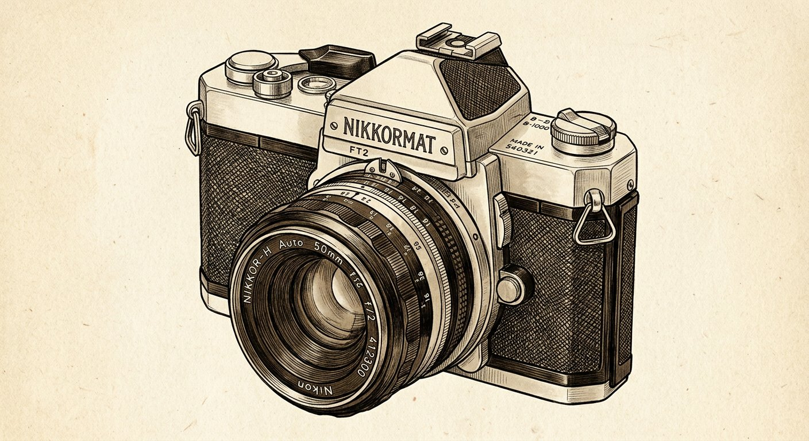
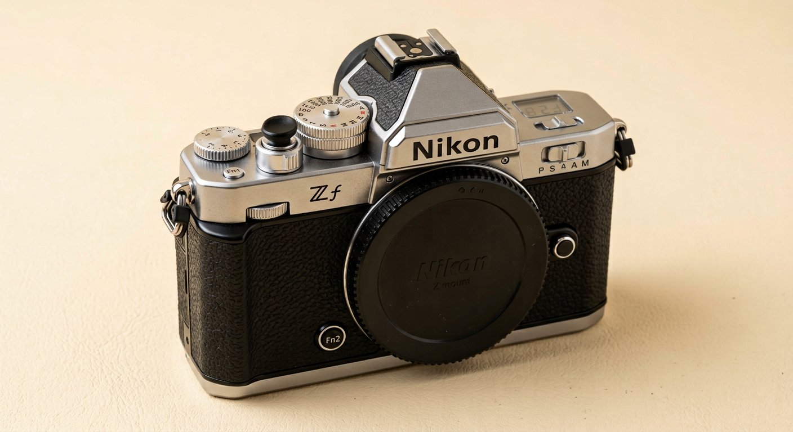

01
Simple. Exact. Retro.
Pick lens and scene. Choose your situation. See only what you need.

Build Your Shot
CHOOSE LENS · MODE · SCENE · SITUATION
02
MODE
03
PLACE
04
LIGHT
Pick place first
Choose lens,mode and scene.
Get only what matters.
05
YOUR SETTINGS
- ISO
- 100
- Shutter
- 1/125
- Aperture
- f/4
- Focus
- AF-S
- Drive
- Single
- WB
- Auto
- Picture Ctrl
- Standard
Pick all four to see your settings.

Camera Control Map
TOP VIEW · FOUR MAIN DIALS
RETRO MIRRORLESS • TOP VIEW INFOGRAPHIC
- 1ISO DIAL100 → 6400 • C = Auto
- 2SHUTTER SPEED DIAL30 → 8000 • B • T
- 3APERTURE DIALf/2 → f/16
- 4EXPOSURE COMP DIAL−3 → +3
TAP A LABEL
01 ISO DIAL
How much light the camera picks up.
- Low ISO → clean photo.
- High ISO → grainy photo.
- Set this last.
- C = camera picks it.
02 SHUTTER SPEED DIAL
How long the camera stays open.
- Fast (1/500 → 1/8000) → freezes movement.
- Slow (1/30 → 30 sec) → blurs movement.
- Walking 1/250 • Running 1/500 • Sports 1/1000.
- By hand → 1/60 or faster.
- B and T → very long shots.
03 APERTURE DIAL
How blurry the background is.
- f/2 → blurry background.
- f/8 → most things sharp.
- Front dial sets it.
- Shown on the top screen.
04 EXPOSURE COMP DIAL
Makes the photo brighter or darker.
- + → brighter.
- − → darker.
- Snow or sand → use +.
- Bright lights → use −.
FOCUS MODE 4 TYPES
AF-S
Subject stays still → locks once.
AF-C
Subject moves → keeps following.
AF-F
Video → focuses on its own.
MF
You focus by hand.
AF-AREA SYMBOLS ON YOUR CAMERA
Match the symbol on screen → to the mode name.
- Pinpoint AF
- Single-point AF
- Dynamic-area AF (S)
- Dynamic-area AF (M)
- Dynamic-area AF (L)
- Wide-area AF (S)
- Wide-area AF (L)
- Wide-area AF (C1)
- Wide-area AF (C2)
- 3D-tracking
- Subject-tracking AF
- Auto-area AF